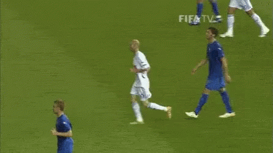

Zinédine Zidane, también conocido como Zizou, es un exfutbolista y entrenador francés de ascendencia argelina. Es el entrenador del Real Madrid Club de Fútbol de la Primera División de España. Como entrenador, debutó al frente del Real Madrid el 4 de enero de 2016, ostentando el cargo durante tres temporadas, en las que se proclamó consecutivamente tricampeón de Europa (2016, 2017 y 2018). En marzo de 2019, inició su segunda etapa como entrenador del club merengue.
